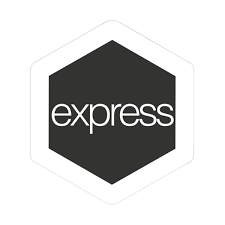
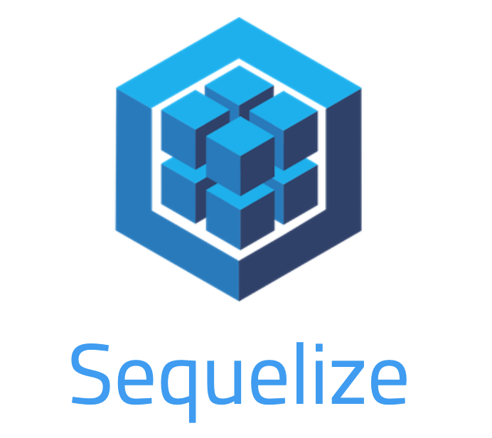
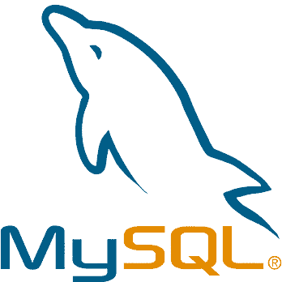
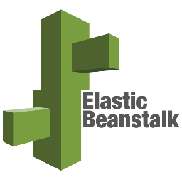
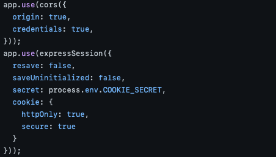

Project information
- 구성원: backend(1명), frontend(1명)
- 프로젝트 기간: 2021.02 ~ 2021.06
- Github: https://github.com/jiho5993/gyumongeats
- 배포는 현재 중단된 상태입니다.
Project Stack
프로젝트에 사용된 기술 스택입니다.

Express.js
가벼운 코드로 웹 서버를 구현할 수 있다는 장점과 함께, 코드의 자유도가 높아 프로젝트 구조를 개발자의 마음대로 쉽게 구성할 수 있습니다.

Sequelize
orm은 객체지향적인 코드로 인해 더 직관적이고 로직에 집중할 수 있도록 도와줍니다. 그로 인해 재사용 및 유지보수의 편리성이 증가해 더 쉽게 프로그래밍할 수 있기 때문에 채택했습니다.

MySQL
설치와 관리가 비교적 쉽고, 대규모 데이터베이스를 다룰 필요가 없었기 때문에 MySQL을 채택했습니다.

AWS Elastic Beanstalk
ec2와는 달리 세부적인 세팅없이 가장 쉽고 빠르게 배포할 수 있다고 하는 eb를 선택했습니다. 단순한 코드 업로드를 통해 배포를 진행했습니다.
BEAUTIFULSOUP
적당한 로고가 없어 수프 사진으로 대체했습니다.. 실제 음식점 데이터를 수집하기 위해 사용했습니다.
Project Content
프로젝트에 구현한 주요 기능입니다.
# 실제 서비스 사용을 위한 기능 구현
- * 유저 로그인, 음식점 조회, 주문 등
# Transaction을 사용하여 여러 연산 처리
- * 주문 api같은 여러 DB 연산이 들어가는 기능에는 Tranasction으로 처리했습니다.
# AWS Elastic Beanstalk 배포
- * eb cli로 프로젝트를 손쉽게 배포했습니다.
Issue
프로젝트를 진행하면서 발생한 이슈입니다.
1. 배포 후 쿠키가 전달되지 않는 점
* 문제점 로컬 환경에서 잘 작동하던 쿠키 기능이 배포 후 잘 전달되지 않는 문제가 발생했습니다. * 해결 과정 쿠키 기반의 데이터는 CORS와 SameSite 정책때문에 기능이 잘 작동되지 않는다는 것을 알았습니다. * 해결 방법 백엔드에서 CORS 설정과 Cookie에 대한 옵션을 더 추가하여 해결했습니다. 코드 : https://github.com/jiho5993/gyumongeats/blob/master/back/app.js

느낀 점
프로젝트를 진행하면서 느낀 부분을 적었습니다.
- 1. 로컬에서 로그인 테스트했을땐 쿠키의 전달을 확인할 수 있었지만, 배포하고 나서의 쿠키는 전달되지 않았습니다. 단순 로그인 처리에 대해 문제가 있었다고 생각했지만 로컬과 달리 실제 배포 환경에서는, 보안에 관한 여러 정책들이 존재했고 쿠키를 처리하고 싶으면 설정을 따로 해둬야한다는 것을 알았습니다. 로컬의 환경과 배포의 환경은 다르다는 것을 알 수 있었습니다.
- 2. 필요한 기능을 쓰려면 그에 대한 이론이 중요하다는 것을 알았습니다. transaction 같은 개념은 학교에서 배운 데이터베이스 이론 시간에 떠올릴 수 있었습니다. 만약 transaction을 몰랐다면 매번 DB 연산에 대한 rollback을 직접 처리했을 거라고 생각하니 이론이 그만큼 중요하다는 것을 깨달았습니다.
- 3. 현재는 access token만 이용하여 로그인 상태를 관리하고 있지만, 링크 의 주석처럼 refresh token까지 사용하여 둘 다 관리하고자 했습니다. 하지만 이론 지식이 아직 부족했고, 어떤 느낌인지 알 수 있었지만 구현 능력도 부족하여 도입할 수 없었습니다. 새로운 개념을 알 수 있어서 좋았지만, 실제로 도입하기에는 아직 미숙하다는 생각이 많이 들었습니다. 이 프로젝트에서는 구현못했지만, 다른 프로젝트에서는 구현할 수 있도록 해야겠다는 생각이 들었습니다.